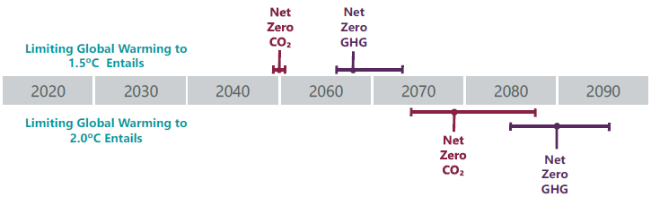
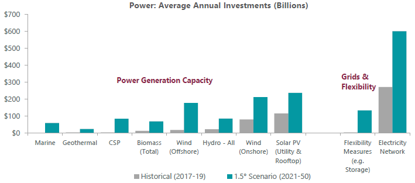
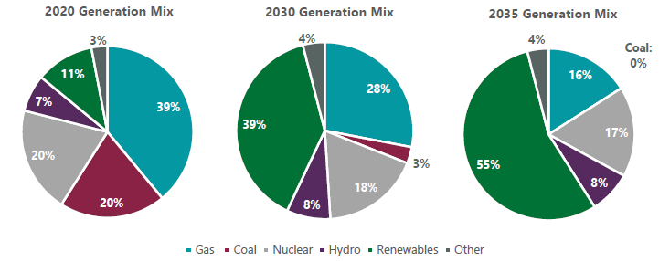
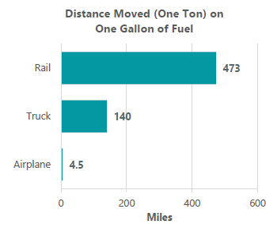
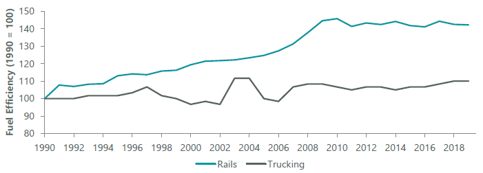
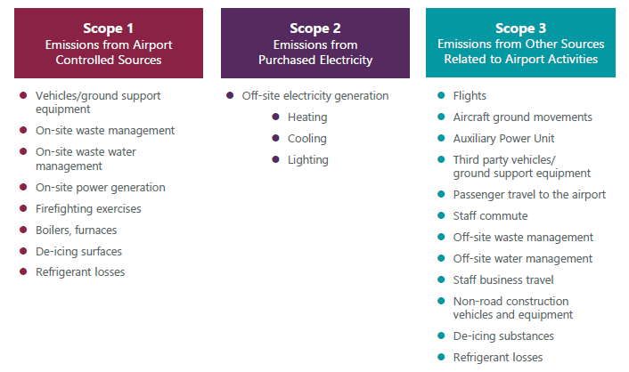

For investors seeking reliable income, global diversification and inflation protection, specialist listed infrastructure portfolios aims to provide all three.
Infrastructure has a key role in the move toward decarbonisation and net-zero, with opportunities as well as challenges for different infrastructure sectors.
Here we outline next steps for four infrastructure sectors, highlighting accelerating investments in electric utilities, a shifting mentality in the rail sector, transitions in energy infrastructure and the challenge of Scope 3 emissions at airports.
Global listed infrastructure allows investors access to this accelerating investment through high-quality and geographically diverse liquid assets.
Net-zero refers to the balance between the amount of greenhouse gas (GHG) produced and the amount removed from the atmosphere. Net-zero is reached when the amount we add is no more than the amount taken away. Under the Paris Agreement, countries agreed to limit warming well below 2° Celsius, and ideally 1.5° Celsius. Climate impacts that are already unfolding around the world, even with only 1.1° Celsius of warming — from melting ice to devastating heat waves and more intense storms — show the urgency of minimising temperature increases.
The latest science suggests that to meet the Paris Agreement’s temperature goals, the world will need to reach net-zero emissions according to different timelines for each degree scenario (Exhibit 1). At the very least, major emitters (such as the U.S., the EU and China) should reach net-zero GHG emissions by 2050, and ideally much earlier, given the outsized role these economies play in determining the trajectory of global emissions.
The energy sector is responsible for around 80% of manmade CO2 emissions (according to the International Renewable Energy Agency, or IRENA) and has a central role in delivering the decarbonisation required to reach net-zero by 2050.
The most important part in the global energy transition is the combination of the increasing use of low-cost renewable power technologies and the wider adoption of electricity to power transport and heating. Electrification allows for the use of carbon-free electricity in place of fossil fuels and significantly improves the overall efficiency of the energy service supply. Electric vehicles, for instance, are more efficient than those powered by internal combustion engines. Hydropower generation, as well, is more efficient than natural gas generation.
Exhibit 1: Global Timelines to Reach Net-Zero Emissions

Source: World Resources Institute, IPCC.
This is important as reductions in energy intensity need to be accelerated.
Click here to learn why net zero is a positive for infrastructure investing.
Infrastructure has a key role in the move toward decarbonisation and net-zero. Here we examine how different infrastructure sectors have been moving toward a net-zero target and what to expect next.
Electric utilities can be broadly categorised as three subsectors: generation (gencos), transmission and distribution networks (T&D), and retail supply. Gencos and T&D are the most relevant to the move toward net-zero.
Utilities: Background
Gencos: Over the past decade, power gencos’ investments have increasingly skewed toward adding renewables capacity, driven by conducive policies (such as tariff subsidies, tax credits and renewable portfolio standards).
Before 2010, global annual renewables capacity addition was below 100 GW per year, but the pace doubled to almost 200 GW per year by 2019, led by utilities and accompanied by energy companies. Meanwhile, utilities have been decommissioning thermal and nuclear plants. The changing generation and capacity mix of these companies has been the pivotal force behind their GHG emission reductions.
Taking the biggest GHG emitter, China, as an example, major state-owned gencos have grown their wind and solar capacities at a much higher rate than coalfired plants over the past decade, under the central government’s strengthening directive to reduce reliance on coal and GHG emissions. Moreover, they have been replacing small units (<300 MW) with larger and more efficient ones, promoting combined heat-power cogeneration (CHP) for thermal plants when possible, upgrading coal-fired units to decrease the unit coal consumption, and participating in the national research and trial of carbon capture, utilisation and storage (CCUS) and carbon trading. Consequently, the proportion of coal-fired generation of total capacity in China fell from 67% in 2010 to 49% in 2020. As of 2020, China already accounts for the largest amount of global wind and solar capacity in terms of annual addition and cumulative fleets.
T&D: T&D players globally have been investing more heavily in storage, digitalisation, flexible demand management and rolling out smart meters in order to address the growing challenge of stability and flexibility amid increasing renewables. These investments drive reductions in their indirect emissions, while direct (Scope 1) emission reduction is mainly achieved through lowering sulfur hexafluoride (SF6) leaks. According to IRENA data, solar and wind energy as variable renewable energy accounted for 10% of total global electricity generation in 2019, up from below 5% in 2015. Taking China as an example again, power grids have invested heavily to improve reliability and reduce grid curtailment of wind and solar farms (deliberate reduction in output below what could have been produced, in order to balance the energy supply). They have also invested in ultra-high-voltage transmission lines to connect renewable-resource-rich western provinces to the high-power-demand eastern provinces.
Utilities: Next Steps
We expect these trends of electric utilities to continue with an accelerating pace until 2050.
Electricity is slated to become the main energy carrier in energy consumption by 2050, accounting for roughly 51% of consumption, up from 21% in 2018 and 30% expected in 2030, according to IRENA. Renewables, electrification and energy efficiency are the main pillars of this transition. By 2050, to achieve a 1.5° Celsius goal, renewables’ share of electricity could become as high as 90%, versus 25% today.
Transmission networks are evolving to be more flexible in coping with the increasing variable renewable energy share. Furthermore, increasing new demand sources, such as electric vehicle and heat-pump adoption, would mean more investment in distribution networks and flexible measures like storage.
For gencos and T&D companies to meet such electricity demand, IRENA forecasts $130 trillion of cumulative investment from 2021 to 2050, averaging $4.4 trillion per year, with 26% on renewables and 22% on electrification and infrastructure. This is a significant acceleration (Exhibit 2).
Exhibit 2: Energy Transition Requires Significant Investment

Source: IRENA World Energy Transitions Outlook 2021.
With the U.S. power generation sector producing 31% of total U.S. energy-related CO2 emissions, utilities remain topical in net-zero conversations as the primary operators of carbon-emitting power generation. However, since the Paris Agreement in 2016 there has been a rapid enhancement of environmental policy in the sector. Most companies have emissions targets in place in their jurisdictions and have guided the market to a strategic pivot from fossil-fueled generation toward renewables. Consequently, renewables are expected to grow substantially at the expense of coal and gas-fired generation (Exhibit 3).
Exhibit 3: Expected Changes in U.S. Power Generation Mix

Source: Morgan Stanley Research.
Utilities: Challenges and Risks
As technologies mature for onshore wind and solar, lowering the entry barrier and upfront unit costs, many companies — including equipment manufacturers, oil majors, and financial institutions — are more actively competing with utilities. Return spreads over the cost of capital may also become less lucrative than in previous years. Subsidy support may expire after the initial 10–15 years, leaving companies exposed to risks of merchant prices or lower returns. However, the importance of subsidy support mechanisms may diminish thanks to a rapid fall in the levelised cost of energy. Utilities may still opt for contracting (e.g. through corporate power purchase agreements) to mitigate risks of power price volatility. For new technologies like offshore wind, project preparation and construction take much longer, as such projects may be more susceptible to construction and permitting delays; given the long lead time, there may also be higher uncertainty around cost overrun and the ability to pass that on to customers.
On the other hand, network investments are typically built around multi-annual regulatory reviews or rate cases, so the achieved return and cash flow profile is relatively predictable. One caveat is around customer affordability, specifically if the increase in capex gets reflected in the final bill, as gas and electricity regulators (such as Ofgem in the U.K.) come to terms with the difficult task of balancing social pressure and customer needs against allowing decent returns for system operators. Nonetheless, the risks for T&D are generally small; for instance, transmission costs represent below 5% of end-user electricity bills in Italy.
In the U.S., as we saw this winter in Texas, the key challenge for utilities amid a large buildout of renewables is maintaining a stable grid while baseload generation is replaced with intermittent resources.
The North American rail industry plays an essential role in servicing the freight industry. For long distance freight, rail represents the cheapest and most fuel-efficient form of transportation and is an important business partner of the industrial sector. Key goods shipped via rail include agriculture and forestry products, construction materials, automotive parts, coal and chemicals.
Rail: Background
Railroads are one of the ultimate ESG winners in the transportation industry due to their unique ability to reduce transport-related GHG emissions. Rails are on average 4x more fuel efficient than trucks, producing up to 75% less GHG emissions. The sector is viewed favorably from a regulatory standpoint due to these environmental benefits and clients are becoming more willing to make the shift from trucks to rail in order to reduce their carbon footprint.
Until recently, railroads set conservative improvement benchmarks, with the average rail committing to reducing GHG emissions by 5%–8% over time. These targets were easily achieved, and today rail is laser focused on improving the reliability of service and becoming a viable alternative to trucks for shorter lengths of haul (Exhibit 4). Rail is reaping the benefits of service improvements that are enabling a gradual modal conversion of trucks to rail (Exhibit 5).
Iberdrola Combating Climate Change and Growing Asset Base
Iberdrola is a vertically integrated European utility with a global footprint of electricity supply, transmission and distribution networks as well as generation assets that has been increasing its focus on renewables in the last 20 years. It has set a goal of reaching global carbon neutrality by 2050 and reducing emission intensity by 86% to 50g CO2/kWh globally by 2030 (versus 2000). In Europe — where it already generates 100% of energy with zeroemissions in the U.K., Germany and Portugal — Iberdrola targets reaching carbon neutrality by 2030, ahead of the EU’s latest target of 2050.
For Iberdrola, it has made commitments to a number of international organisations and business coalitions (e.g., the U.N. Global Compact, WBCSD, the Corporate Leaders Groups, the Race to Zero campaign and the Powering Past Coal Alliance) in order to combat climate change. As of November 2020, it targets its renewables capacity to grow from 35 GW in 2020 to 60 GW in 2025 and 95 GW in 2030, implying a 11% 10-year compound annual growth rate (CAGR). For networks, it has launched initiatives to renew networks, improve key substations and infrastructure and adopt more digitalisation programs. It expects the total regulated asset base (in the U.S., Spain, the U.K. and Brazil) to grow from€31 billion today to €47 billion in 2025 and €60 billion by 2030, implying a 7% 10-year CAGR.
Rail: Next Steps
Reflecting a strong shift in mentality across the sector, over the last two years, railroads have begun committing to the CDP Science-Based Targets (SBT) initiative, which independently assesses corporate emissions reduction targets in line with what climate scientists say is needed to meet the goals of the Paris Agreement. Rails that have published targets are aiming for 30% less GHG emissions, on average, by 2030.
Exhibit 4: Rail Covering More Distance Per Unit of Fuel

Source: Wolfe Research.
While rails are ultimately required to burn diesel to fuel their locomotives, there has been a dramatic improvement in efficiency in recent years.¹ Due to the industry-wide adoption of Precision Scheduled Railroading (PSR), rails are now burning less fuel per ton mile than ever before and have significantly cut GHG emissions. This is not only better for the environment; it also helps their bottom line.
Rail: Challenges and Risks
The main challenge to rails achieving their ESG targets is likely the rail regulator, Surface Transportation Board (STB), which has fielded complaints by shippers that PSR causes unwanted disruption even while it boosts fuel efficiency. The STB appears increasingly to be supportive of PSR, however.
Further improvement is also predicated on rail companies continuing to improve their technology in the form of trip optimisers and natural-gas-operated locomotives (versus diesel). Improvements in technology are assumed to occur over time, thus GHG reduction targets will be at risk if rails cannot continue to efficiently develop and deploy these technologies.
Exhibit 5: Rail vs. Truck Efficiency

Source: Association of American Railroads, U.S. Energy Information Administration.
Energy infrastructure consists primarily of large oil and gas pipelines that transport the commodities through oil and gas fields to various demand markets. Gas utilities are also part of the value chain that ultimately takes the gas from the large pipelines through its gas networks to the end customer.
Energy Infrastructure: Background
The gas pipeline sector has been a large contributor to the reduction of GHG emissions in the electricity sector, largely because gas contributes approximately half of the CO2 emissions as coal and has been replacing it as a fuel to generate electricity.
This trend has slowed down considerably recently, with renewable energy approaching price parity with fossil fuels, helped by increasing commitments and subsidies from governments moving toward cleaner energy. This has meant in recent years gas has become a target to reduce GHG emissions, rather than a solution in prior decades. In addition to this, the evolution of electrifying transport through electric vehicles is now threatening the future of oil and the existence of oil pipelines.
Energy Infrastructure: Challenges and Risks
Amid growing net-zero commitments, the oil and gas sectors face greater challenges than other infrastructure sectors, with their primary business lines part of the value chain of GHG emitters. Yet pipeline companies are still attempting to contribute to the move toward net-zero, and many are embracing this as an opportunity to grow.
The main challenges for energy infrastructure companies are balancing the disruption to the traditional oil and gas businesses and the new technologies and investments in clean energy. With the majority of cash flows sourced from traditional means over the next decade, the execution risk will be their inability to commercialise new businesses or fail to compete effectively with new players. While we are optimistic about achieving net-zero, we remain skeptical that all pipeline companies will benefit from the transition, outside of retrofitting the pipeline network to handle renewable natural gas and hydrogen.
North American Pipelines Seizing Green Opportunities
Many North American pipeline companies are embracing the opportunity to move toward a greener future:
Air travel has grown strongly since the 1960s as real ticket prices have fallen and wealth has increased. Today air travel accounts for approximately 2.5% of global CO2 emissions and 12% of transport emissions, with emissions per kilometer traveled relatively high, resulting in trends such as “flight shaming.” Consequently, traffic at airports has grown strongly during this period.
Airports: Background
Typically, emissions from airports are low relative to travel-related emissions from airplanes and ground transport to and from the airport (Exhibit 6). The main source of airports’ direct GHG emissions is electricity consumption. Historically, efforts to reduce airport GHG emission have focused on energy efficiency, for example installing LED lighting and improving the efficiency of heating, ventilation, and air conditioning (HVAC) systems as well as building thermal/lighting characteristics.
Airports have also sought better real-time information sharing between parties such as air traffic control, airlines, airport operations and ground handling in order to reduce indirect, or Scope 3, emissions through more efficient flight and ground transport operations.
Airports: Next Steps
To lower direct emissions, airports are seeking to:
To lower indirect emissions — such as airline takeoff (within one kilometer of the airport) and landing and ground transport, which can be in the order of 10x an airport’s direct emissions — airports are seeking to:
Airports: Challenges and Risks
Airports are expected to achieve their Scope 1 and 2 emissions targets as sources of emissions are relatively well-understood. Given airports typically have significant surface area, they may either purchase or invest in renewable energy.
Scope 3 reductions are significantly more challenging given this requires aircraft technology development to achieve lower emissions. Airports also have a significant role in reducing emissions with ground transport associated with air travel. In many cases this will be dictated by the decarbonisation of road transport, however in many cases airports can influence and encourage the shift toward lower emission ground transport within their precincts.
Exhibit 6: Source of Emissions at Airports

Source: Airport Carbon Accreditation.
Sydney Airport Reducing Scope 1 and 2 Emissions
Sydney Airport has a highly integrated approach to sustainability. It issued the first-ever sustainability-linked bond into the U.S. private placement market in 2020. Airports have a complex array of stakeholders; in Sydney Airport’s case, the federal government (lease, operating license, biosecurity, border control), state government (ground transport, emergency services), local government (local community and business, waste management, noise, roads), and airlines (key customers), to name a few. Sydney Airport’s key targets for direct emissions include carbon neutrality by 2025 and reducing carbon emissions per passenger by 50% by 2025 (versus a 2010 baseline). In order to achieve this, it is seeking, among other things, to procure renewable energy, electrify its landside bus fleet and achieve a minimum 4-star Green Star Design and As-Built rating for new developments. The airport is also supporting its stakeholders in emission reductions by:
Improving airspace and airfield efficiency through A-CDM and the installation of ground power and preconditioned air at aircraft parking bays to reduce aircraft engine operation.
Several Pathways to Net-Zero
While moving toward net-zero is difficult, several pathways exist for infrastructure to lead. Each of these will require substantial investment. Infrastructure companies and asset owners have historically been reducing carbon emissions from their assets, and this trend is set to accelerate as global policy support and social pressures grow and as equipment costs fall. Global listed infrastructure allows investors access to this accelerating investment through high quality and geographically diverse liquid assets.
Click here to learn why net zero is a positive for infrastructure investing.
In our latest Valuation update, Portfolio Manager Daniel Chu outlines the main drivers of infrastructure returns in the fourth quarter of 2022 and weighs in on the factors impacting different infrastructure sectors across the globe.
Read full article1 Electrification of the freight rail network is a long-term possibility that would yield significant fuel efficiency savings. At this point in time, there is no desire from either the rails or regulator to pursue this option, given the unrealistic costs associated with electrifying their network and locomotives. However, as technology evolves over time electrification could become a possibility.